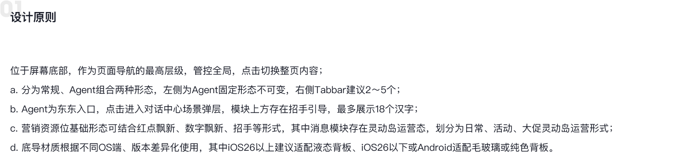
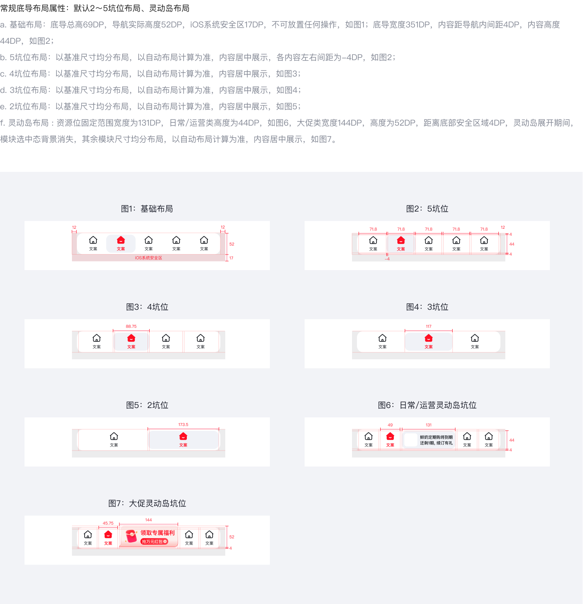
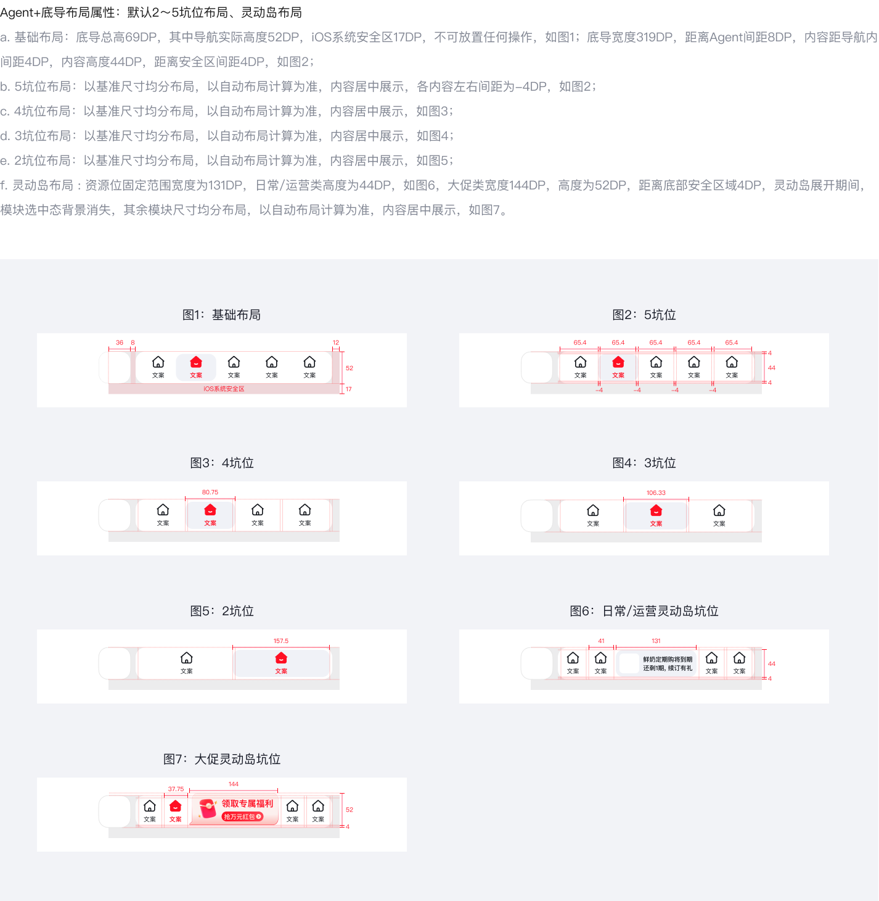
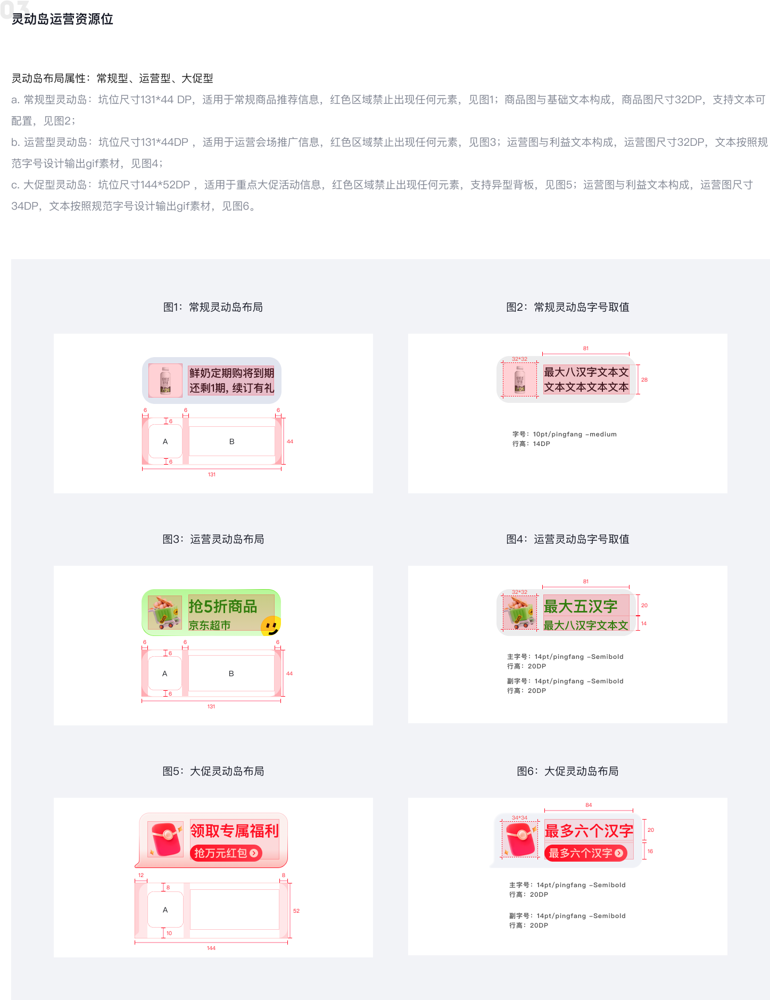
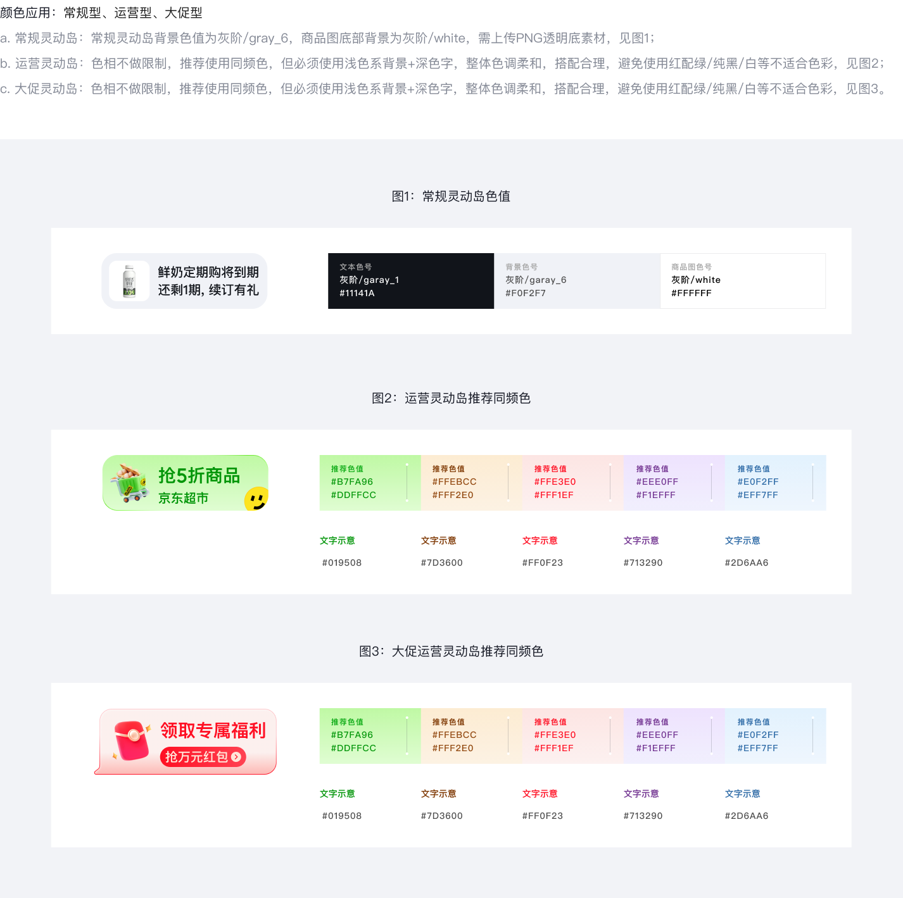
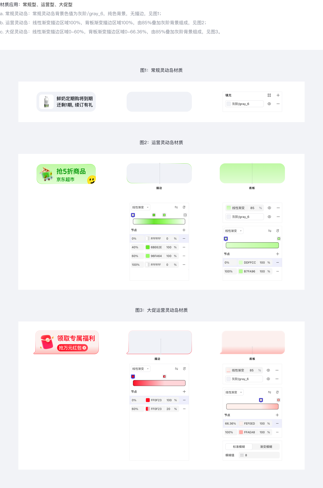
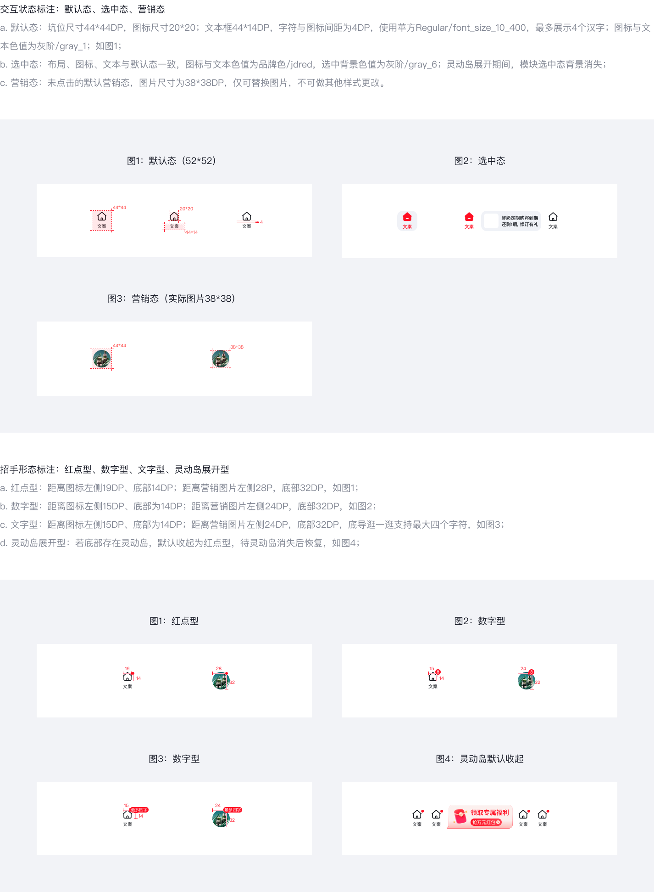
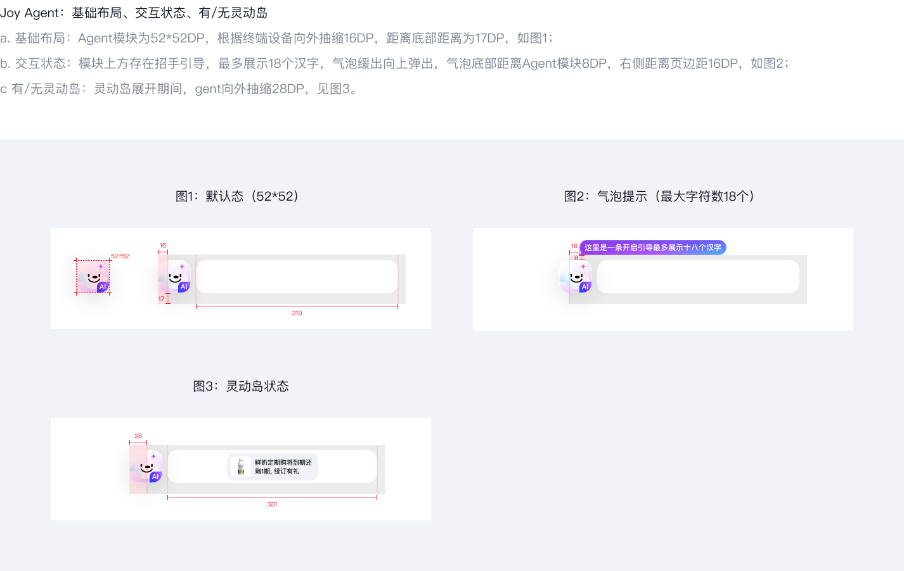
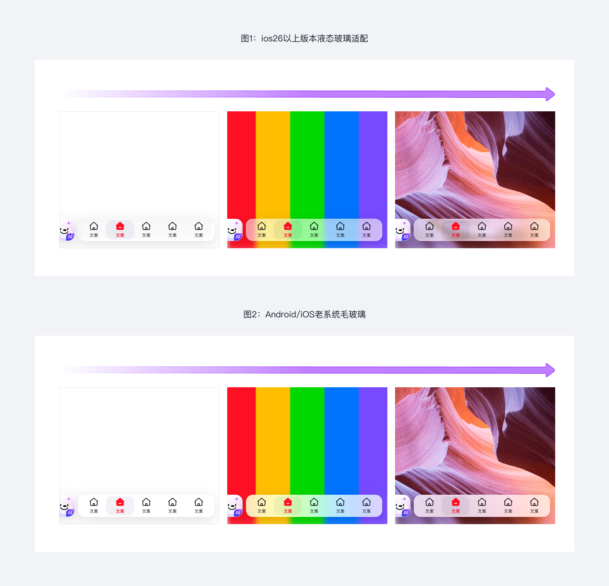

底部导航栏(Tabbar)是 JD APP 屏幕底部的全局导航组件,作为页面导航的最高层级管控全局,点击切换整页内容。
它的核心边界是「切换整页内容」而非「承载子页面」:Tabbar 内的坑位是一级 Tab,各 Tab 之间无父子关系;二级及以下页面应由顶部 NavBar 或 SegmentControl 承担。当一级功能超过 5 个时,应在内容层重新组织而非给 Tabbar 加 Tab。
| 维度 | Tabbar | NavBar(顶部) | Drawer / 侧抽屉 |
|---|---|---|---|
| 层级 | 一级(全局) | 二级及以下(页面内) | 全局或二级 |
| 承载交互 | Tab 切换 + 灵动岛 + Joy Agent | 返回 / 标题 / 操作按钮 | 账户 / 偏好 / 长尾入口 |
| 典型坑位数 | 2 ~ 5 | 1 主标题 + ≤ 2 操作 | 无上限 |
| 常驻可见 | 是 | 是(页面内) | 否(收起态默认隐藏) |
| 位置 | 屏幕底部 | 屏幕顶部 | 左 / 右侧 |
V16 立场:Tabbar 是 APP 唯一全局导航,不允许在底部并行存在其它常驻导航条;不允许超过 5 个一级 Tab(章节 01 建议上限);不允许定制坑位高度或图标尺寸偏离 44×44 / 20×20 规范。

V16 共定义 2 种形态(常规 / Joy Agent 组合) + 3 种灵动岛运营资源位(常规型 / 运营型 / 大促型)。
| 形态 | 标识 | 宽度 | 组成 | 典型用途 |
|---|---|---|---|---|
| 常规底导 | regular | 351 DP | 2 ~ 5 坑位 + 可选灵动岛 | 普通业务页面全局导航 |
| Joy Agent 组合底导 | agent_combo | 319 DP(右侧 Tabbar)+ 8 DP 间距 + 52×52 DP Agent | Joy Agent + 2 ~ 5 坑位 + 可选灵动岛 | 需 AI 入口的首页/会场 |
| 类型 | 标识 | 尺寸 | 商品/运营图 | 字号 | 材质 | 颜色规则 | 适用 |
|---|---|---|---|---|---|---|---|
| 常规型 | regular | 131×44 DP | 32 DP | 主 14pt / 副 14pt / 小 10pt | 纯色 gray_6,无描边 | 背景 gray_6,商品图底 white(PNG 透明底) | 日常商品推荐 |
| 运营型 | operation | 131×44 DP | 32 DP | gif 文本按规范字号 | 渐变描边 100% + 85% 灰阶叠加 | 同频色 / 浅色背景 + 深色字 | 运营会场推广 |
| 大促型 | promotion | 144×52 DP | 34 DP | gif 文本 + 京东正黑强调 | 渐变描边 0~60% + 异型背板 | 同频色 / 浅色背景 + 深色字 | 重点大促活动 |





不允许新增 Tabbar 形态。运营 / 大促诉求由灵动岛(占用消息位)承载,不允许新增第 5+ 坑位或将 Tabbar 整条改色。
Tabbar 由容器 + N 个坑位(可选 Joy Agent + 可选灵动岛)组成,其中容器和至少 2 个坑位为必要元素。
| 属性 | 值 | 对应 Token |
|---|---|---|
| 总高度 | 69 DP(含 iOS 安全区) | —(spacing 未绑定) |
| 导航实际高度 | 52 DP(不含安全区) | — |
| iOS 系统安全区 | 17 DP(不可放置任何操作) | — |
| 圆角 | 16 DP | radius_xxl(Atom: Radius_16) |
| 背景(iOS 26+) | 液态玻璃 | liquid-glass(materials 待建) |
| 背景(Android / iOS 26 以下) | 毛玻璃 fallback | frosted-glass |
| 常规底导宽度 | 351 DP | — |
| Agent + 底导宽度 | 319 DP(距 Agent 8 DP) | — |
| 属性 | 值 | 对应 Token |
|---|---|---|
| 坑位基础尺寸 | 44 × 44 DP | — |
| 图标尺寸 | 20 × 20 DP | — |
| 文本框 | 44 × 14 DP | — |
| 字符与图标间距 | 4 DP | — |
| 默认态色(图标 + 文本) | 灰阶 | gray_1 |
| 选中态色(图标 + 文本) | 品牌色 | jdred / color_primary (#ff0f23) |
| 选中态背景 | 灰阶 | gray_6(灵动岛展开期间消失) |
| 营销态图片 | 38 × 38 DP,仅可替换图片,不可改其它样式 | — |
| 5 坑位左右间距 | -4 DP(均分布局,自动布局计算) | — |
| 层级 | 字号 | 字重 | 行高 | 对应 Token |
|---|---|---|---|---|
| 底导标签默认态 | 10 PT | Regular (400) | 14 | pingfang_regular/font_size_10_400 |
| 底导标签选中态 | 10 PT | Semibold (600) | 14 | pingfang_semibold/font_size_10_600 |
| 灵动岛主字号 + 副字号 | 14 PT | Semibold (600) | 20 | pingfang_semibold/font_size_14_600 |
| 灵动岛小字号 | 10 PT | Medium (500) | 14 | pingfang_medium/font_size_10_500 |
| 大促灵动岛强调文字 | 14 PT | 京东正黑 Bold | 20 | zhenghei_bold/font_size_14_600 |
| 属性 | 值 |
|---|---|
| 模块尺寸 | 52 × 52 DP |
| 距底部 | 17 DP |
| 默认抽缩 | 16 DP(向外) |
| 灵动岛展开期抽缩 | 28 DP(向外) |
| 招手气泡距 Agent 模块 | 8 DP(底部间距) |
| 招手气泡距页边距 | 16 DP(右侧) |
| 招手气泡最大字符 | 18 汉字 |
| 点击行为 | 进入对话中心场景弹层 |


| 位置 | 用途 | 距屏幕底部 |
|---|---|---|
| bottom(唯一) | 全局一级导航,常驻底部 | 0 + iOS 安全区 17 DP |
不允许 center / top 位:Tabbar 是全局常驻导航,只能在屏幕底部。center / top 区域留给 Toast、NavBar、Banner 等其它组件。
常规底导: Joy Agent 组合底导:
┌─────────────────────────────┐ ┌───┐ ┌──────────────────────┐
│ [icon][icon][icon][icon][i] │ 52 │ A │ 8│[icon][icon][icon][i] │ 52
│ 首页 分类 车 消息 我 │ │ g │ │ 首页 分类 车 我 │
├─────────────────────────────┤ │ e │ ├──────────────────────┤
│ iOS 安全区 │ 17 │ n │ │ iOS 安全区 │ 17
└─────────────────────────────┘ │ t │ └──────────────────────┘
←────── 351 DP ──────→ │52×│ ←──── 319 DP ────→
│52 │
└───┘
↑ 距底 17, 默认抽缩 16(灵动岛展开 28)
灵动岛在消息位嵌入,131×44 (日常/运营) 或 144×52 (大促)
距底部安全区 4 DP
⚠️ TBD:本组件 design.md 暂未提供 motion / transition 参数。建议补充: ① Tab 切换的内容入场动效(
page-transition?) ② 选中态色 + 背景的过渡时长 / easing ③ 灵动岛展开/收起动效参数(对应 V16 motion tokenrole.island-expand/role.island-collapse) ④ Joy Agent 抽缩(16 → 28 DP)的过渡参数
regular,5 坑位均分,坑位文本 ≤ 4 汉字jdred,默认态 gray_1,符合所有规则agent_combo,Joy Agent 52×52,右侧 319 DP问题:章节 01 设计原则建议 2 ~ 5 坑位,超出会导致坑位宽 / 文本可读性下降,且决策成本上升。应在内容层重新组织(如将"动态"并入"消息")。
问题:章节 02 默认态规定底导标签最多 4 汉字。"首页推荐"5 字应改为"推荐","个人中心"应改为"我的"。多字会导致文本框 44×14 DP 截断或缩字。
问题:章节 02 营销态明确"仅可替换图片,不可做其它样式更改"。常见错误包括:① 给营销态加自定义边框/动画;② 改文本颜色为非品牌色;③ 调整图片尺寸偏离 38×38 DP。这些都违反规范。应保留 38×38 图片本身的视觉表达,不改文本/背景/边框。
问题:章节 03 三型布局规定"红色区域禁止出现任何元素"。常见错误包括:① 在灵动岛右上角加 NEW 角标;② 在灵动岛左侧加额外图标。应将所有附加标识合并到主文本中,或改用 gif 素材内嵌(运营/大促型灵动岛文本走 gif 渲染)。
问题:坑位均分布局是 V16 强约束(章节 02 各坑位均分)。中部留空破坏均分。如要嵌入灵动岛,应使用灵动岛占用消息位规则(见 sec-3),不要直接留白。
| 场景 | 形态 | 坑位数 | 灵动岛 | 招手 | 说明 |
|---|---|---|---|---|---|
| JD 首页(无 Agent) | regular | 5 | 常规型(消息位) | 红点 / 数字 | 购物车 / 消息常驻角标 |
| JD 首页(Agent 组合) | agent_combo | 4 | 常规型 / 运营型 | 红点 / 数字 / 文字 | 左侧 Joy Agent 入口 |
| 会场页 / 大促首页 | regular | 4 / 5 | 大促型(144×52) | 无 / 文字 | 大促灵动岛占用消息位 |
| 京喜 / 极速版独立 BG | regular | 3 | 常规型 | 红点 | 3 坑位精简结构 |
| 消息中心展开态 | regular / agent_combo | 5 / 4 | 展开(选中态背景消失) | 降级红点 | 灵动岛展开期间招手降级 |
| 客服 / Agent 入口 | agent_combo | 4 | — | 气泡(≤ 18 汉字) | 点击进入对话中心场景弹层 |
| 沉浸式视频 / 详情 | regular | 5 | — | — | 深底材质(iOS 26+ 液态 / 老系统毛玻璃) |
| 购物车数字提醒 | regular | 5 | — | 数字(≤ 99+) | 购物车角标 |
| 反场景 | 应改用 |
|---|---|
| 二级页面导航(详情页 Tab) | 页面内 SegmentControl / TabBar(轻量) |
| 账户 / 偏好 / 长尾入口 | Drawer / 「我的」二级页 |
| 临时操作反馈(成功 / 失败) | Toast(center / top 位) |
| 跨页内容浮窗 | Banner / Sheet |
| 需要超过 5 个一级功能的场景 | 在内容层重新组织(并入 / 拆 BG) |
| 临时强提醒 | Dialog / Modal |
// 全局 API(规范草案,基于 design.md AI Schema)
JDTabbar.config({
form: 'regular' | 'agent_combo', // 默认 regular
slots: [ // 2 ~ 5 个
{ key: 'home', icon: 'home', label: '首页', selected: true },
{ key: 'cat', icon: 'cat', label: '分类' },
{ key: 'cart', icon: 'cart', label: '购物车', badge: { type: 'red-dot' } },
{ key: 'msg', icon: 'msg', label: '消息', badge: { type: 'number', value: 99 } },
{ key: 'profile', icon: 'profile', label: '我的' },
],
agent: { // 仅 agent_combo 形态
size: 52,
bubble: { text: '试试问我大促攻略', maxChars: 18 },
onClick: () => router.openAgentSheet(),
},
island: { // 可选,占用消息位
type: 'regular' | 'operation' | 'promotion',
image: 'asset://...',
title: '鲜奶续订有礼',
onClick: () => router.go('/island-target'),
},
material: 'auto' // auto 按 OS 版本切液态/毛玻璃
});
JDTabbar.select('home'); // 切换 Tab
JDTabbar.setBadge('msg', { type: 'number', value: 5 });
JDTabbar.expandIsland({ /* island config */ });
JDTabbar.dismissIsland();./_assets/sec-{1-5}-*.png(9 张,2.0 MB,SCALE 1:1 from Relay)foundations/tokens/color.md — color_primary / gray_1 / gray_6 / jdred / whitefoundations/tokens/typography.md — pingfang_regular/font_size_10_400 / pingfang_semibold/font_size_10_600 / pingfang_semibold/font_size_14_600 / pingfang_medium/font_size_10_500foundations/tokens/radius.md — radius_xxl(底导容器,16px) / radius_xl(灵动岛容器,12px)foundations/tokens/spacing.md — spacing token 未绑定(25+ DP 标注待回填)foundations/tokens/materials.md — liquid-glass / frosted-glass(待建)horizontal/components-business/joy-agent/,待录入)